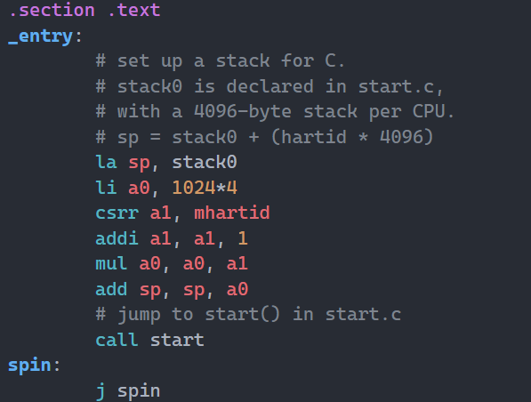
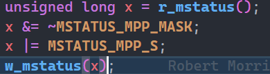
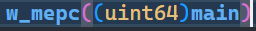
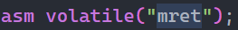
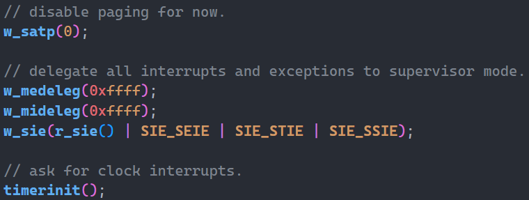
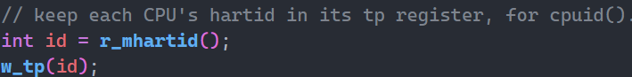

[xv6]:内核启动
当RISC-V计算机启动时，他会初始化自己，并且运行一个位于只读存储器的引导装载程序（boot loader）。这个程序会把XV6的内核加载到 0x80000000这个物理地址，然后CPU从此位置开始执行。
每个CPU刚开始运行时都会为自己设置一个大小为4096字节的向下生长的栈。由于此时系统操作的地址都是物理地址，所以每个CPU都会根据自己的CPU编号计算出属于自己的栈顶位置，以避免栈相互渗透干扰。（entry.S/_entry）
entry.S

kernel.ld 连接脚本会将_entry符号置于0x80000000处
此时系统位于机器模式（machine mode）下，但是由于该模式下我们无法使用虚拟地址空间，因此我们需要尽快切换进入管理员模式（supervisor mode）。为了达成这个目的，我们需要巧用几个机器模式下的寄存器和指令，这些寄存器原本是用来在机器模式下处理异常的：
mepc寄存器：当发生异常时，pc寄存器中的值会被复制到该寄存器中。mstatus寄存器：记录发生异常的指令运行时的一些状态mret指令：从机器模式返回。执行完该指令后会把存储在mepc的地址复制到pc寄存器中，并恢复原来的模式
此时我们的系统并不是因为发生异常后进入的，但我们可以通过修改寄存器的值来营造这样的假象：将 mstatus中代表异常指令所处模式的那一个bit位设置成管理员模式，将 mepc设置为 main函数的地址。这样修改后，就好像是之前正以管理员模式运行，但是刚运行到 main函数时发生了异常，进入机器模式
start.c



这样修改后，当我们调用 mret指令时，就可以“返回到之前发生异常的”地方，即 main函数处，且模式也“恢复”成了原来的管理员模式。于是完成了以管理员模式运行 main函数的目的。当然我们在机器模式下也不是立刻就跳转进入管理员模式的，中间还是需要进行了一些设置的。比如关闭虚拟地址的转换功能（这样之后进入管理员模式后使用的也是物理地址），初始化时钟中断，将cpu编号存入 tp寄存器里。(kernel/start.c)
- start.c


在 main函数(kernel/main.c)里会根据CPU编号进行一些初始化设置，CPU0会先进行初始化，并在初始化时调用创建第一个用户进程其余CPU只有等CPU0完成初始化后才能进行初始化（初始化调用的函数与CPU0并不相同）
第一个用户进程会创建console（控制台），并且将文件描述符0，1，2均指向console。然后该进程调用 fork，在子进程中调用 exec来运行 sh，即运行操作系统的终端。这样就完成了内核的启动
本博客所有文章除特别声明外，均采用 CC BY-SA 4.0 协议 ，转载请注明出处！